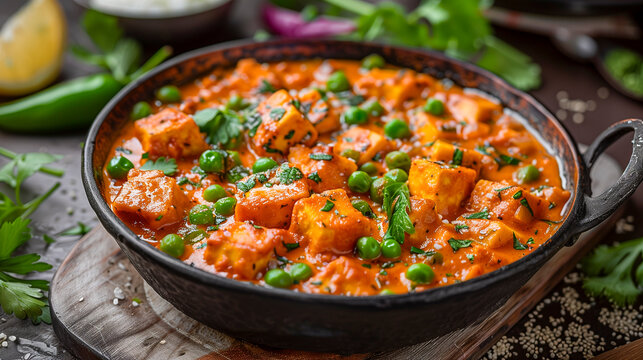

Matar paneer

Description
paneer is a quintessential ingredient that you can prepare on special occasions & festivals. To make your festival celebrations more happening, we have got you covered with this Matar Paneer recipe, which is super-easy to make. It's a quick curry that can be enjoyed with steamed rice as well as chapati.
ingredients
- 250 gm paneer
- 2 large minced onion
- 1 teaspoon ginger paste
- 1 teaspoon cumin powder
- 1 tablespoon coriander powder
- 1/2 teaspoon turmeric
- 1 pinch asafoetida
- 1 cup water
- 1 cup peas
- 1 cup tomato puree
- 1 teaspoon garlic paste
- 1 pinch mace powder
- 1 teaspoon red chilli powder
- 1/2 teaspoon cumin seeds
- 2 tablespoon refined oil
- 1 teaspoon garam masala powde
Steps
- Saute the spices and cook onion until translucent
- Cook the peas first and then add paneer in the masala
- Add fresh cream and cook for 2-3 minutes
- Garnish and serve
Home